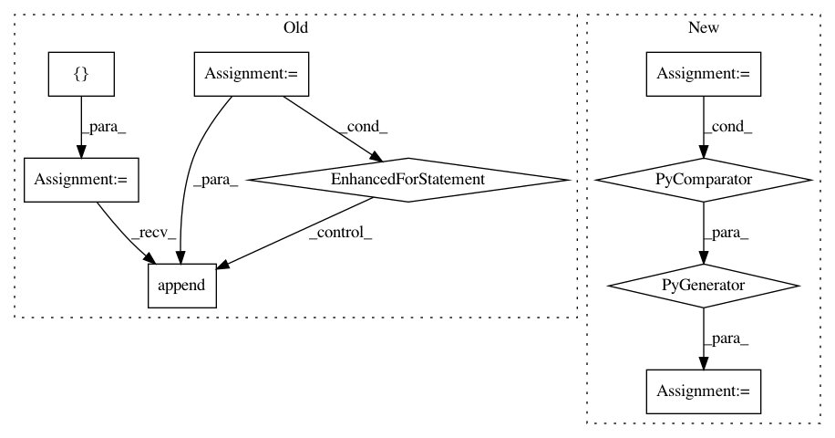

79d149dd39dc7e7d22c623c0a4a4d3ab99e61c76,conceptnet5/vectors/transforms.py,,choose_small_vocabulary,#,153
Before Change
- contain more than one word
- are not in ConceptNet
small_vocabulary = []
finder = AssertionFinder()
for term in big_frame.index:
// Make sure the term is not a phrase
if term.count("_") < 1:
// Check if a term comes from ConceptNet
results = finder.lookup(term)
if results:
small_vocabulary.append(term)
return small_vocabulary
def make_big_frame(frame, lang):
After Change
- are not in ConceptNet
DATA = environ.get("CONCEPTNET_BUILD_DATA", "data")
concepts = set(line.strip() for line in open(path.join(DATA, "stats", "core_concepts.txt")))
small_vocab = [term for term in big_frame.index if term.count("_") < 1 and term in concepts]
return small_vocab
In pattern: SUPERPATTERN
Frequency: 4
Non-data size: 9
Instances
Project Name: commonsense/conceptnet5
Commit Name: 79d149dd39dc7e7d22c623c0a4a4d3ab99e61c76
Time: 2017-06-15
Author: joanna.teresa.duda@gmail.com
File Name: conceptnet5/vectors/transforms.py
Class Name:
Method Name: choose_small_vocabulary
Project Name: PIQuIL/QuCumber
Commit Name: 6a9b9a282e8698f7a8c5d66c0e42851bd0c53d2b
Time: 2019-12-23
Author: emerali@users.noreply.github.com
File Name: tests/grads_utils.py
Class Name: ComplexGradsUtils
Method Name: transform_bases
Project Name: pgmpy/pgmpy
Commit Name: d9213be6d79011721e43444b03d27fe6aaa65071
Time: 2014-01-29
Author: abinash.panda.ece10@itbhu.ac.in
File Name: pgmpy/BayesianModel/BayesianModel.py
Class Name: BayesianModel
Method Name: get_states
Project Name: fmfn/BayesianOptimization
Commit Name: a470d2d3ae0bb8b9407c8ead7149d47fc5b25257
Time: 2016-12-27
Author: fmfnogueira@gmail.com
File Name: bayes_opt/bayesian_optimization.py
Class Name: BayesianOptimization
Method Name: initialize